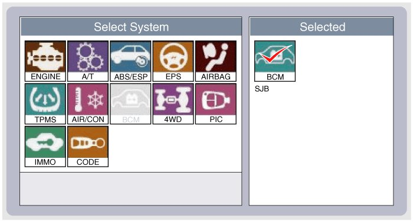
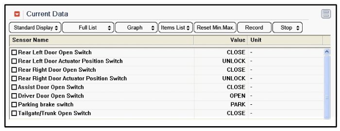
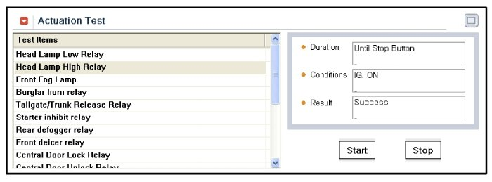
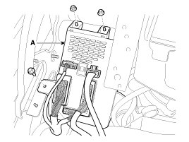

Repair Procedures
Fuse Inspection
1. Be sure there is no play in the fuse holders, and that the fuses are held securely.
2. Are the fuse capacities for each circuit correct?
3. Are there any blown fuses?
If a fuse is to be replaced, be sure to use a new fuse of the same capacity. Always determine why the fuse blew first and completely eliminate the problem before installing a new fuse.
Inspection
1. The SJB can be diagnosed by using the GDS. The SJB communicates with the GDS which then displays inputs and outputs along with codes.
2. To diagnose the SJB function, select the vehicle model, BCM and SJB.

3. To consult the present input/out value of SJB, "Current DATA". It provides information of SJB input/output conditions.

4. To perform functional test on SJB outputs, select "Actuation Test"

Removal
Passenger Compartment Junction Box (SJB)
1. Disconnect the negative(-) battery terminal.
2. Remove the crash pad lower panel.
3. Disconnect the connectors from the fuse side of the smart junction box.
4. Remove the smart junction box after loosening the mounting nuts (2EA) and bolt.

5. Disconnect the connectors from the back side of the smart junction box.
Installation
1. Install the smart junction box.
2. Install the crash pad lower panel.
3. Check that all system operates normally.